隣地隣家に枝が越境している
奈良市中心・奈良県内対応
隣家・屋根・電線に近い木、倒れそうな木、管理できなくなった空き家の庭木まで対応。写真を送るだけで概算見積できます。
Trouble
枝の越境、倒木リスク、空き家の庭木、解体前の伐採まで。近隣や建物に影響しやすい木ほど、早めの状況確認が必要です。
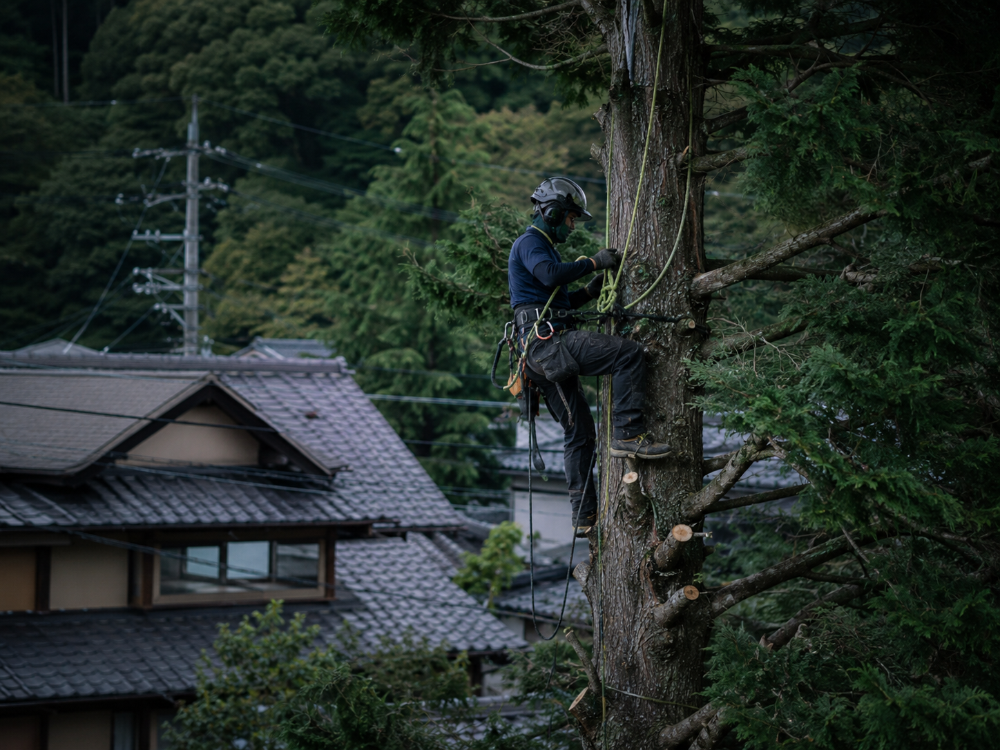
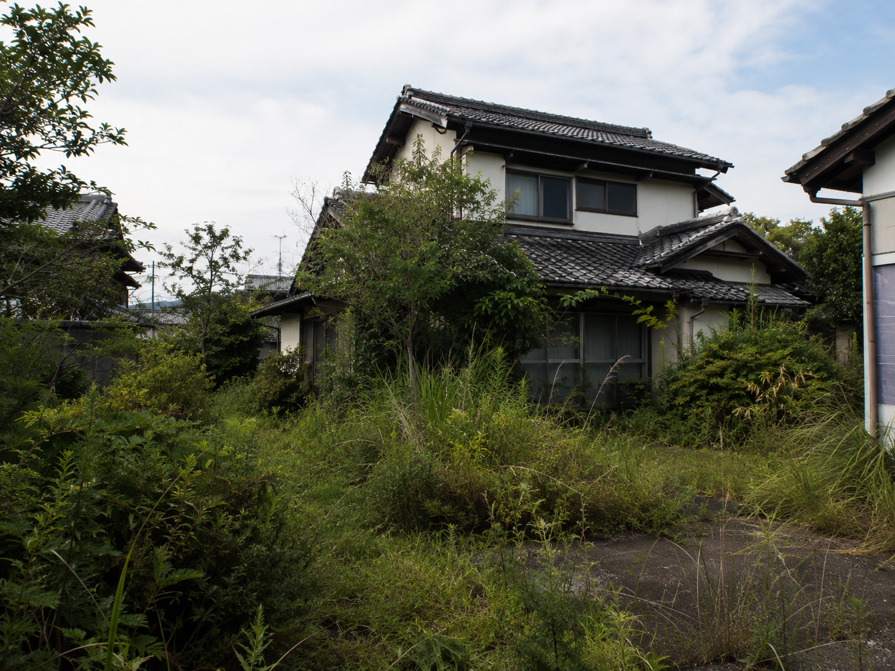

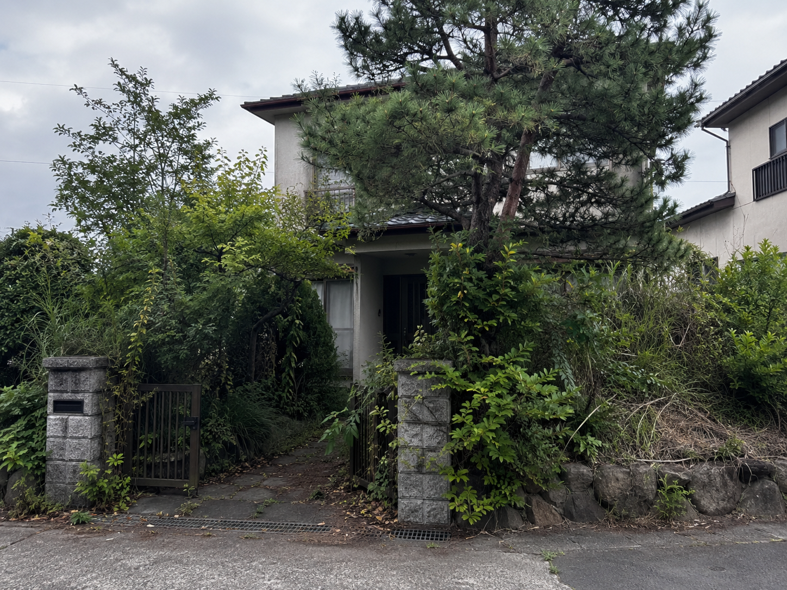
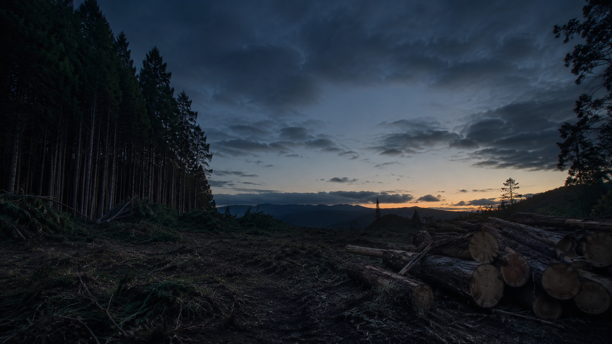
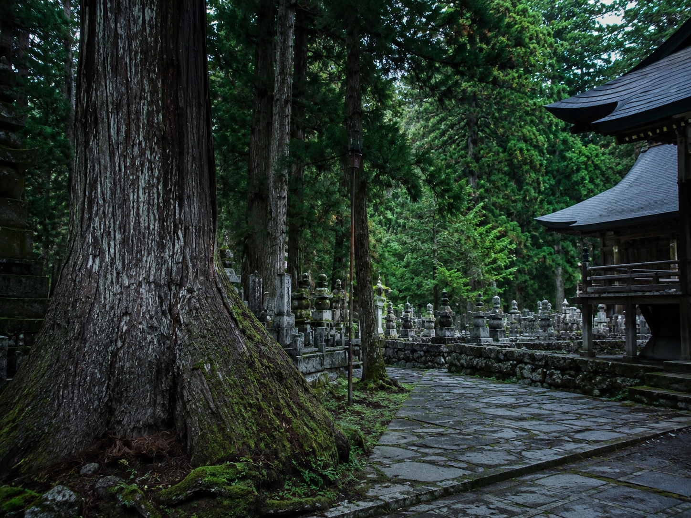
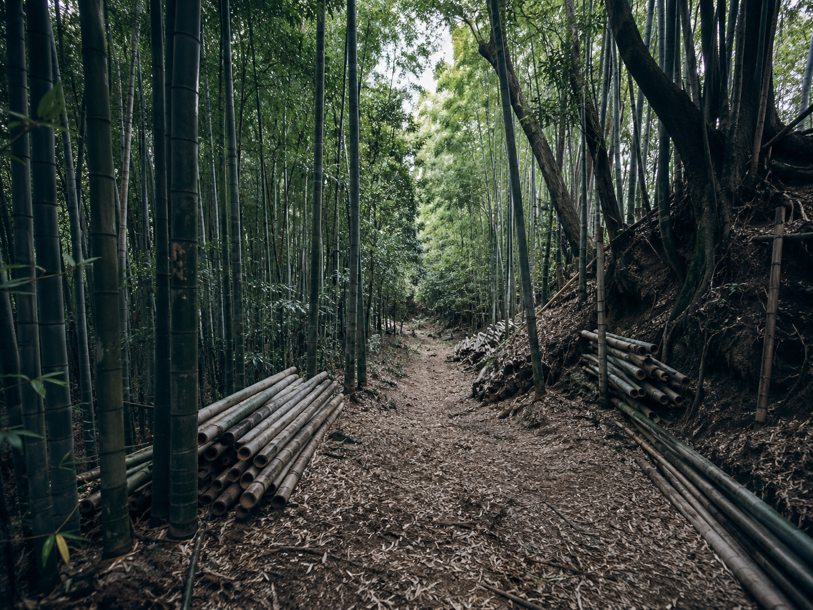
Service
低い庭木だけでなく、建物や道路に近い木、空き家・山林・法面など手間のかかる現場もご相談ください。
主要サービス
家屋より高くなった木、枝が越境している木、管理が難しくなった木に対応します。

倒木リスク
倒れそうな木、台風前後に不安な木、屋根・電線・隣家に近い木を確認します。

狭小地・難所
重機が入りにくい場所や上から少しずつ切る必要がある木を、状況に応じて作業します。
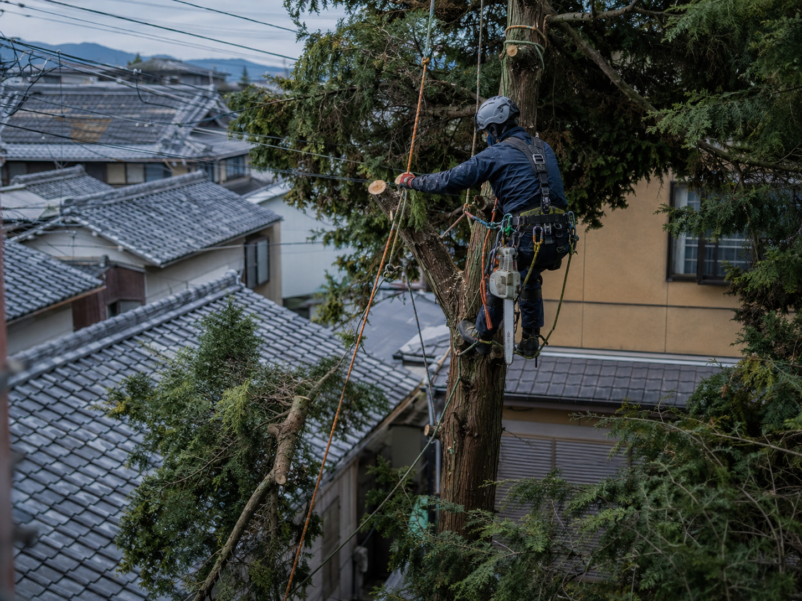
庭木1本から対応。敷地内の不要木、伸びすぎた木を整理します。
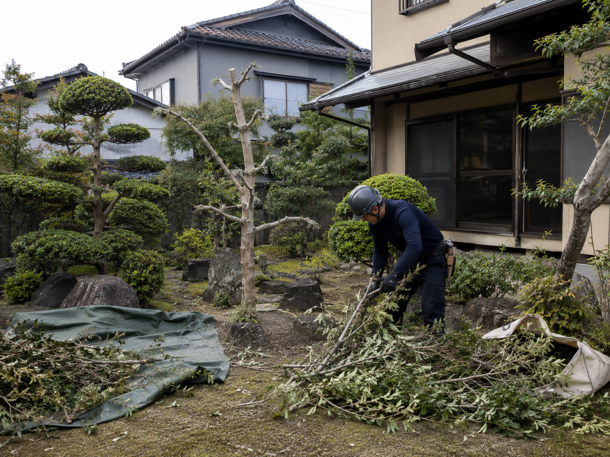
売却前、管理物件、解体前の荒れた庭木をまとめて整理します。

広がった竹林、境界周辺の竹、管理できなくなった竹やぶを整理します。
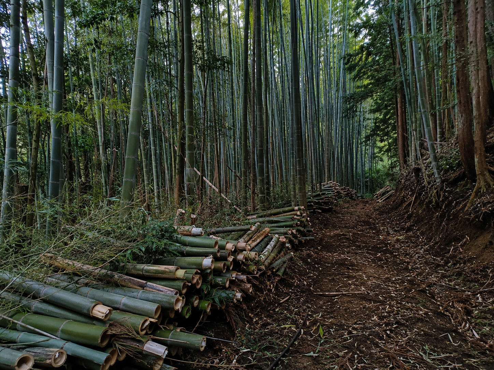
雑木、斜面、道路沿い、敷地境界の整理などを現場に合わせて確認します。
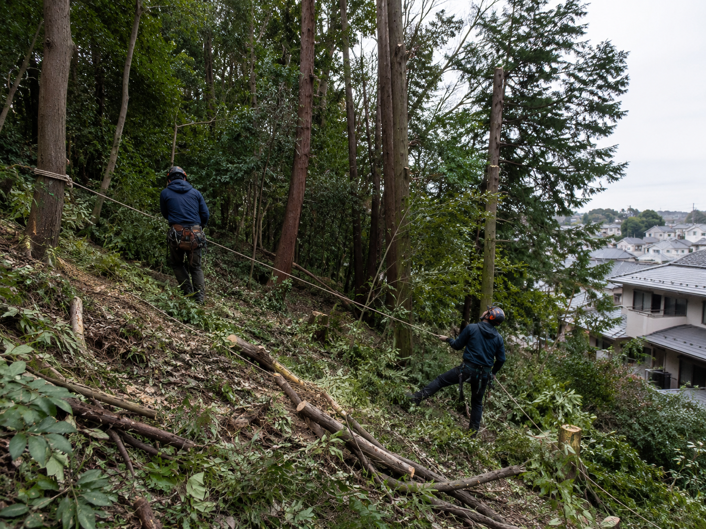
墓地、寺社、霊園周辺の木を、近隣や参拝者に配慮して作業します。
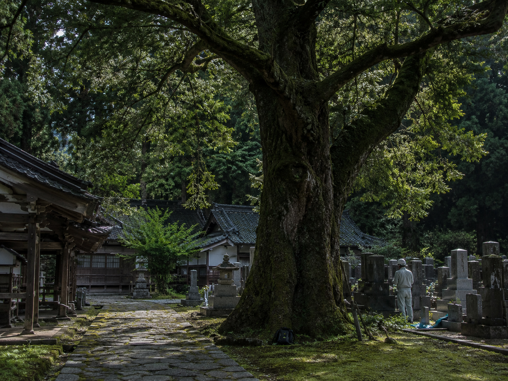
傾いた木、折れた枝、倒木の危険がある木を早めに確認します。
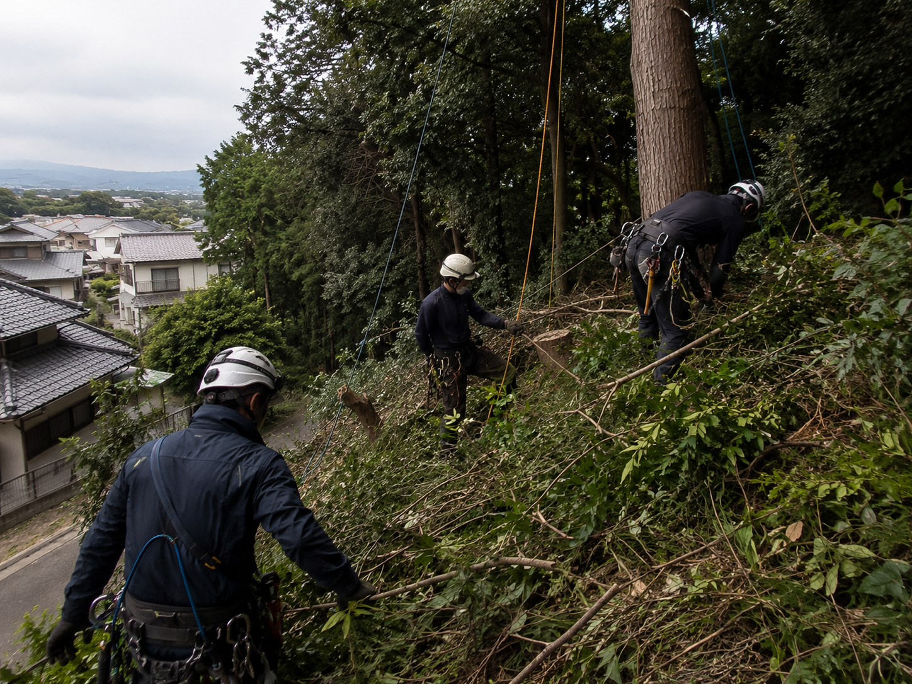
Detail Pages

Reason
Works
公開時は実際の施工前後写真に差し替えてください。市町村、木の高さ、本数、料金目安まで出すと問い合わせ前の不安が下がります。

奈良市
お客様の悩み：枝が隣家へ越境し、台風時の落枝が心配。上から切り下ろして周辺に配慮しました。

生駒市
お客様の悩み：売却前に庭が荒れて見える。搬出・処分まで含めて敷地を整理しました。

天理市
担当者コメント：参道や墓石、搬出経路を確認し、周辺に配慮して伐採・搬出できます。
掲載写真は対応イメージです。実際の施工写真は順次掲載予定です。
Area
奈良市・奈良県を主軸に、空き家、住宅密集地、寺社・墓地周辺、山林・法面の現場まで内容に応じて確認します。
奈良県内、大阪・京都・三重・和歌山方面も内容により相談可能
Flow
まずは木と周辺状況が分かる写真を送ってください。概算をお伝えし、必要に応じて現地確認へ進みます。

写真だけで概算見積が可能です。木の全体、根元、周辺の建物や電線、搬出経路が分かる写真を送ってください。正式金額は必要に応じて現地確認後にお伝えします。
庭木1本から対応します。高木、危険木、空き家の庭木整理、竹林整理などもご相談ください。
隣家、屋根、電線に近い木や倒れそうな木も状況を確認して対応します。危険度が高い場合は安全な作業方法を確認したうえで見積します。
相談可能です。状況により電力会社への確認が必要な場合があります。写真で木と電線の距離が分かるようにお送りください。
可能です。売却前、管理物件、解体前の庭木整理もご相談ください。庭木の伐採、搬出、処分まで状況に合わせて確認します。
搬出・処分まで対応できます。処分量や搬出距離により費用は変動します。
小雨であれば作業できる場合がありますが、安全に影響する雨風の場合は日程を調整します。
周辺住宅、車両、通行、騒音に配慮して作業します。必要に応じて事前説明も行います。
大丈夫です。金額や作業内容を確認したうえでご判断ください。
奈良市を中心に奈良県内へ対応します。大阪、京都、三重、和歌山方面も内容により相談可能です。
Estimate
倒れそうな木、隣家にかかる枝、空き家の荒れた庭木でお困りでしたら、現場状況を確認し、概算見積をお伝えします。
奈良市中心・奈良県内対応